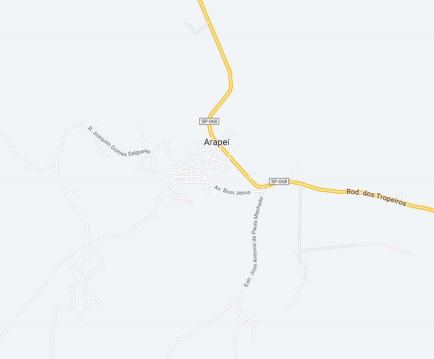

Arapeí - Geodex

Município de Arapeí
-
Populacão: 2.452 pessoas
-
Área: 156.903km²
-
Fundação: 19 de Maio de 1991
-
Distância da Capital: 297km
Arapeí é uma localidade que teve origem na 9ª Sesmaria de Bananal, desempenhando um papel relevante no Ciclo do Café. Após a queda da produtividade cafeeira, passou a se basear na pecuária leiteira. Em 1991, por meio de um plebiscito, Arapeí se separou de Bananal e se tornou um município. Atualmente, o turismo é o principal setor econômico, graças às suas riquezas naturais e patrimônio cultural. A cidade preserva sua arquitetura e o charme de uma cidade do interior, atraindo turistas em busca de paz e tranquilidade.